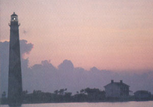
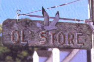

REPORTS FROM AMERICA
From Blackbeard to the dogfish hole
Erected in 1859, the 150-foot Cape Lookout Light-house still flashes "I am right here" every night.
What on earth happened to the "Ye"?
BREVARD, NC-It was well past midnight, and I sat glued to the television weather channels as Hurricane Hugo's 135-mile-an-hour winds bore down on the eastern Carolinas. As reports of damage poured in, I was torn between grief over the destruction in and around elegant Charleston and relief that the beautiful coast of North Carolina, which I had looked in on only two weeks before, was little affected by the storm.
Many visitors to this stretch of land and water sandwiched between South Carolina and Virginia tend to find one favorite spot to return to year after year. In contrast, I'm equally drawn to many of the area's attractions; the stately past and dynamic present in the bustling port of Wilmington; the sleepy ambience of the village of Ocracoke on the southern portion of the Outer Banks; the sense of time standing still I find in Bath, North Carolina's oldest (1705) incorporated town; the Federal, Italianate, and Victorian homes of New Bern; and the youthful mind-set and the art-colony atmosphere of Manteo on Roanoke Island, the site of England's first attempt to settle this continent. Even so, a small area of North Carolina's Carteret County that calls itself Down East seems to me the quintessence of everything that's best about this sea-and-sky lowland.
Lying just east of the North River, Down East is dotted with several small maritime communities strung along Core Sound-towns so tightly knit that, as one person put it, "there are no such things as secrets." It includes places like Harkers Island, the villages of Atlantic, Davis, and Sealevel, and-at the tip of the county-Cedar Island, best known for the ferry that makes regular runs to Ocracoke on the Outer Banks.
Each of these waterside hamlets contains numerous direct descendants of pre-Revolution-ary settlers, many of whom still speak in a unique and rapid Elizabethan brogue, richly interspersed with their own sea-salty expressions. Hearing it makes me always want to turn casual encounters into lengthy conversations, just so I can enjoy the dialect's melodic meanderings. People don't seem to mind. These friendly "high-tiders"-as Down Easters call people who are raised "on the water"-move at a slow and easy pace anyway and tend not to get "agawaited" (aggravated) very easily at "ding batters" or "dit dots," as outsiders are called.
And "on the water" is where most natives try to spend their spare time. Huge sheltered sounds, bays, rivers, small coves, and creeks all brim with potential seafood feasts. In fact, Carteret County holds more square miles of water (535) than it does of land (529).
If you come here with the right attitude (which includes not jumping in to change the way things are done), one of these natives is likely to "take you under wing" and pass along some of the seaside wisdom and skills garnered over generations. They'll also imbue you with their respect for a "sense of place," because the past is almost palpable here. It's visible in hundreds of structures that date back to the 1700s-some even to the 1600s-and in the energetic restoration and preservation of these treasures. (Buying one of these old homes usually includes the obligation to maintain its historical integrity and to become part of the chain by which the romantic legends of its former occupants are passed along.) The past also comes alive in a remarkable number of museums, in books on local history, in the reminiscences of old-timers. It's integrated into cookbooks that celebrate the region's down-home cuisines, and it's preserved in time-honored crafts and in poems and ballads-those handed down and those still being written.
Whaling ended in 1898, but the art of wooden-boat building is still very much a part of life Down East.
However, past experiences with devastating hurricanes, as well as future ecological concerns, have forced many longtime residents from their ancestral homes in what is now the Cape Lookout National Seashore. This 55-mile series of barrier islands-Shackleford Banks, Core Banks, and Portsmouth Island-runs like a sandy ribbon from Ocracoke Inlet on the northeast to Beaufort Inlet on the southeast. Here, wide, beautiful beaches are pounded by warm, clear waves and backed by low, grass-sprinkled dunes, dense vegetation, and large expanses of salt marshes that shelter wildlife as well as an astonishing array of birds. Because wind, waves, and currents continually reshape these islands and create treacherous shoals, a 1590 map designated Cape Lookout promontorium tremendum, “horrible headland." Later, this coastline became known as the Graveyard of the Atlantic. Today, it is a rich hunting ground for scuba divers, treasure seekers, and underwater archaeologists.
In 1585, when English explorers first landed on these low, narrow, shifting banks of sand, which shelter safe harbors behind them (some even shielding an occasional German submarine during World War II), they found the region mainly occupied by the Coree and Hatteras tribes. But settlers arriving between 1650 and 1700 also found English-speaking (though illiterate) whites already living on what is now the Cape Lookout National Seashore, as well as on Ocracoke, Harkers, and Cedar islands. When these communal-living hunters and fisherfolk were asked about their origins, they replied, "We've always lived here." It's naturally been speculated that these people, who called themselves "ca'e bankers" (a contraction of Cape Bankers), might be descendants of the famous Lost Colony, but we'll probably never know. It doesn't help that a 1711 Indian uprising wiped out most of these early settlers.
But despite the massacre, hurricanes, and isolation, the survivors clung to their lifestyle on the Banks and were even joined by an occasional sailor jumping ship (including 17 former pirates of the onetime scourge of these waters, Edward "Blackboard" Teach). They settled down to make their living from whaling and boatbuilding in communities named Wade's Shore, Windsor's Lump, Guthrie's Hammock, and The Mullet Pond. Then, in 1859, when the present 150-foot lighthouse with its paint job of white-and-black diamonds replaced an inadequate 96-foot version, many gathered in one large community called Diamond City.
Whaling ended in 1898, but the art of wooden-boat building is still very much a part of life in the Down East area. Harkers Island, in particular, is famous for its distinctive "flare bow" boats made from juniper (white cedar) and known for their durability and dependability in rough seas.
Northeasters, the extratropical storms that occur in this area in late fall, winter, and spring, have often been almost as violent as the tropical storms that usually hit from August through October. As accustomed as these early coastal communities were to such storms, nothing prepared them for the hurricanes of 1896 and 1899, when storm surges completely inundated the barrier islands, flooding homes and drowning livestock. Most residents ended up moving to places like Harkers Island, but many also maintained summer fish camps on the banks and continued summer roundups of the wild horses that still occupy area islands. (These "ponies" are supposedly descendants of Arabian horses that survived offshore shipwrecks, but their diet of marsh grass and brackish water has created, over generations, a breed smaller than regular horses.)
Even that remnant of a past lifestyle ended when Shackleford Banks, Core Banks, and Portsmouth Island came under the control of the National Park Service. Back in 1753 the town of Portsmouth had been established as a center for the storage of ships' cargoes; unloading the vessels permitted them to sail through shallow Ocracoke Inlet and proceed by inland waterways to mainland ports. Today, the neat, white, wooden buildings of the once-thriving town are abandoned "ghosts" maintained by a few caretakers.
Twenty years have passed now since the last hurricane hit this area, but only "dit dots," who pay premium prices for waterfront lots, fail to maintain proper respect for the ocean-bom furies that undoubtedly lie ahead. While hurricanes have played a major role in shaping the geography and history of this portion of the Southeast, as well as the character of its people, in the next few years a problem other than hurricanes may be lurking off the Carolina coast. In 1981, Mobil Oil leased oil and gas rights there, and, despite environmental opposition, the company has announced plans to drill an exploratory gas well off pristine Cape Hatteras. Depending upon what Mobil finds-and the company's expectations are high-it may go into full production in the 1990s. Despite the fact that such wells would produce few, if any, local jobs and that heavy metals in drilling muds could damage local waters, I found a surprising degree of local indifference to the ambitiousness of Mobil's plans.
I even found myself momentarily indifferent when retired boat-builder Donald Guthrie and his wife, Daisy-Down East natives-took me out in their small wooden boat to a hogfish hole on the back side of Core Banks. The hogfish (named for both their odor and the grunts they make) were biting fine, and while we fished, we feasted on "spider sandwiches" (whole fried hard-shell crabs in buns). Before we knew it, a spectacular sunset graced the sky, and we realized we were late in heading home. Quickly, as in the tropics, it was dark. We had no running lights, not even a flashlight. Then the old Pinto motor that powered the boat stopped, and a turning tide began pulling us back in the direction from which we had come. While Donald fiddled blindly with the engine, I found myself enjoying the steady lap of the water against the boat and the twinkling reflections of scattered lights along the receding and distant shore. Perhaps I should have been at least slightly worried, but somehow it seemed a waste of lovely time.
|
 WILLIAM WALRON |
 WILLIAM WALDRON |
|